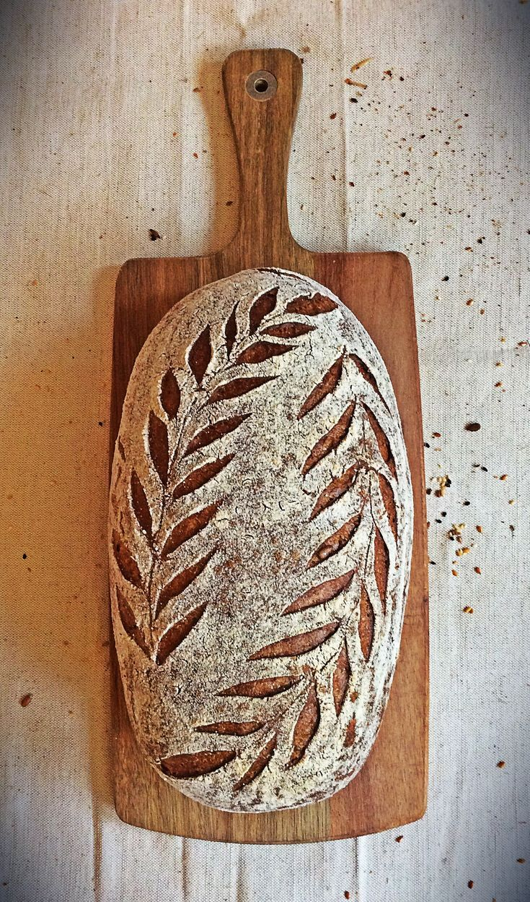
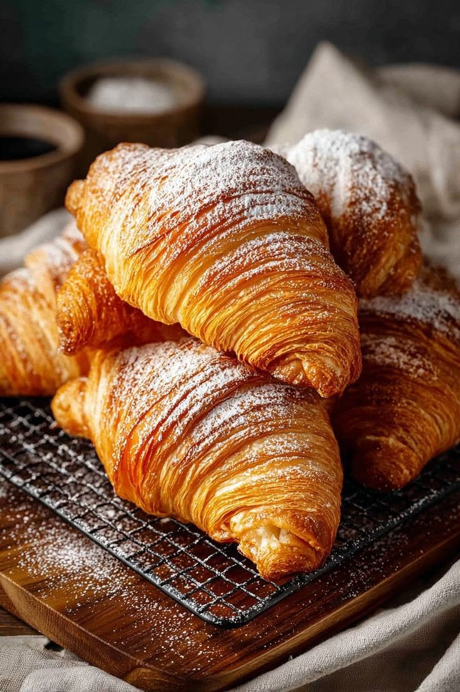
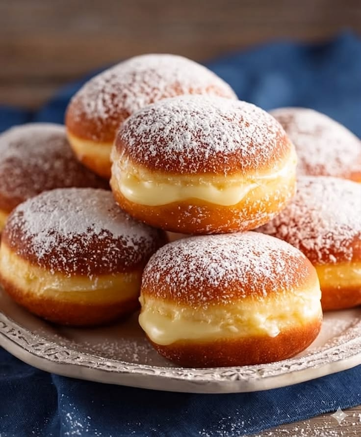
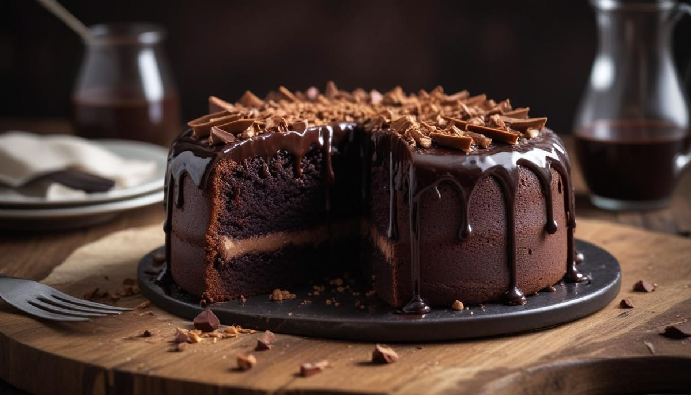
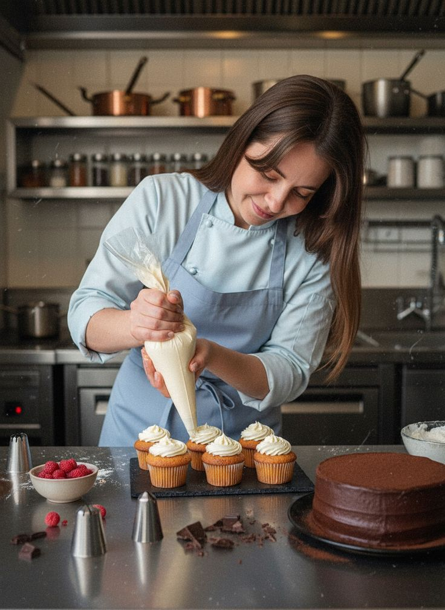

PADARIA ARTESANAL · FEITA TODOS OS DIAS
Da primeira fornada do dia aos doces que tornam cada momento especial, preparamos sabores frescos com ingredientes escolhidos e cuidado em cada detalhe.
Mais do que receitas, entregamos cuidado em cada etapa — da escolha dos ingredientes ao momento em que o sabor chega à sua mesa.



Receitas cheias de sabor, preparadas com cuidado e perfeitas para transformar uma pausa simples em um momento especial.

Na Boa Massa, acreditamos que os melhores sabores nascem do cuidado com cada detalhe. Nosso propósito é reunir frescor, qualidade e aquele aconchego de uma receita feita com carinho.
